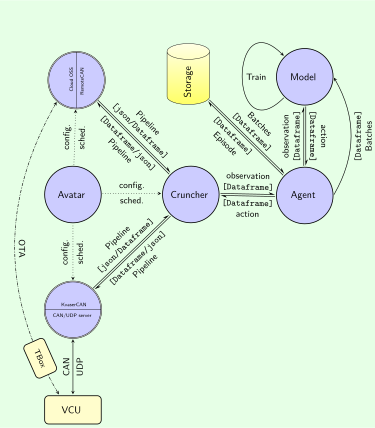

Primary threading pool
is managed by Avatar with two primary threads in tspace.avatar.main:
- The first primary thread is for data caputring
- The second primary thread is for training and inference
tspace is an data pipleline framework for deep reinforcement learning with IO interface, processing and configuration. The current code base depicts an automotive implementation. The goal of the system is to increase the energy efficiency (reward) of a BEV by imposing modification on parameters (action) of powertrain controller, the VCU, based on observations of the vehicle (state), i.e. speed, acceleration, electric engine current, voltage etc. The main features are:

The diagram shows the basic architecture of tspace.
AvatarIt is the entry point of the tspace. It orchestrates the whole ETL and ML workflow.
tspace.avatar.main.It is implemented with Kvaser which provides
a local interface for reading the observation (CAN messages of vehicle states) via Kvaser using udp_context to get CAN messages as json data from a local udp server. Then it encodes the raw json data into a pandas.DataFrame for forwarding through the data pipeline to Cruncher.
It provides a local interface for applying the action (flashing parameters) onto the vehicle ECU (VCU). Before sending the action, it decodes the action from the pandas.DataFrame into packed string buffer and then sends it to the ECU by calling send_float_array from VehicleInterface.consume.
The control messages for training HMI go through the same UDP port. They are used to modify the threading events to control the episodic training process with VehicleInterface.hmi_control.
It provides a remote interface to the vehicle via the object storage system on the cloud sent by the onboard TBox. It’s implemented with Cloud:
It reads the observation (CAN messages of vehicle states) from the cloud object storage system through RemoteCanClient.get_signals. It then encodes the raw json data into a pandas.DataFrame and forward it to Cruncher through the data pipeline.
It sends the action (flashing parameters) to the vehicle ECU (VCU) in the shared VehicleInterface.consume by calling RemoteCanClient.send_torque_map, which decodes the action from the pandas.DataFrame into raw json string.
It selects the training HMI to get the vehicle and driver information as configuration with Cloud.hmi_capture_from_udp for local udp server, with Cloud.hmi_capture_from_rmq for remote RocketMQ server, with Cloud.hmi_capture_from_dummy for pure inference mode without training or updating models. It shares the same control logic VehicleInterface.hmi_control with KvaserCAN.
It is main pivot of the data pipeline for pre-processing the observation and post-processing the action:
The Cruncher.filter reveives the observation through the data pipeline from KvaserCAN or RemoteCAN. It pre-processes the input data into the quadruple with a timestamp \((timestamp, state, action, reward, state')\) and give it to the reinforcement Agent DPG, subsequently its child DDPG or RDPG, for inferring an optimal action determined by its current policy. After getting the prediction of the agent, it encodes the prediction result into an action object and forwards it to VehicleInterface.consume to be flashed onto VCU.
It collects the critic, actor loss, the total reward for each episode, the running reward and the action at the end of the episode. It also saves the model checkpoint and the training log locally.
It provides a wrapper for the reinforcement learning model with DPG:
It has an interface to data storage:
retrieves the observation meta information and database configuration from Avatar,
initializes repo interface Buffer, subsequently MongoBuffer or DaskBuffer which then initializes the database connection with MongoPool or DaskPool respectively.
It transfers observation data to the neural network:
initializes the episode states,
defines abstract methods DPG.actor_predict, DPG.train, DPG.get_losses, DPG.soft_update_target, DPG.init_checkpoint, DPG.save_ckpt, DPG.touch_gpu for concrete implementations in child classes DDPG and RDPG,
provides the concrete methods DPG.start_episode, DPG.end_episode, DPG.deposit, DPG.deposit_episode.
DPG.touch_gpu is used to warm up the GPU before starting inference.
DDPGDPG interface.DDPG.infer_single_sample is the inference method with graph optimization via tf.function.DDPG.sample_minibatch provides a minibatch sampled from the buffer. It handles the bootstrap when the buffer is empty thus there is no samples in the Buffer when the first episode has not ended.DDPG.update_with_batch enforces the back propagation and applies the weight update to the actor and critic network during DDPG.train.RDPGDPG interface.RDPG.actor_predict_step is the inference method with graph optimization via tf.function.RDPG.train_step is the training method with graph optimization via tf.function. It also applies the weight update to the actor and critic networkRDPG.train samples a ragged minibatch of episodes with different lengths from the buffer. It can handle training of time sequences with arbitrary length by truncated back propagation through time (TBPTT) with splitting the episodes and looping over the subsequences with Masking layers to update the weights by RDPG.train_step.IDQLDPG interface.IDQL.actor_predict is the inference method.IDQL.train is the training method. Jaxrl5 takes care of the weight update to the actor and critic and the value network. It samples a minibatch of tuples (state, action, reward, next state) from the buffer.It’s the neural network model for the reinforcement learning agent. For now it’s only implemented for RDPG in SeqActor and SeqCritic.
SeqActorIt is the actor network with two recurrent LSTM layers, two dense layers and a Masking layer for handling ragged input sequence.
SeqActor.predict outputs the action given the state for inference, thus the batch dimension has to be one.SeqActor.evaluate_actions outputs the action given a batch of states for training. It’s used in the training loop to get the prediction of the target actor network to calculate the critic loss.SeqCritic is not used and only SeqActor is required.SeqCriticIt is the critic network with two recurrent LSTM layers and two dense layer and a Masking layer for handling ragged input sequence.
SeqCritic.evaluate_q gives the Q-value given a batch of the state and action. It’s used in the training loop RDPG.train_step to calculate the critic and actor loss.represents the data storage in the repository pattern with two polymorphic abstraction layers Buffer and Pool.
Bufferis an abstract class. It provides a view of data storage to the agent:
Buffer.load, Buffer.save and Buffer.close loads or saves data from or to the Pool, and closes the connection to the Pool.Buffer.sample samples a minibatch from the Pool. It needs the child of Buffer to implement the concrete efficient sampling method, which depends on the underlying data storage system.Buffer.store store the whole episode data into the PoolBuffer.find simply calls Pool.find to find the data with the given query.MongoBufferIt’s a concrete class for the underlying NoSQL database MongoDB.
Buffer interface.MongoBuffer.decode_batch_records prepare the sample batch data from MongoPool into a compliant format for agent training.DaskBufferIt’s a concrete class for the distributed data storage system Dask.
Buffer interface.DaskBuffer.decode_batch_records prepare the sample batch data from DaskPool into a compliant format for agent training.Poolis an abstract class. It’s the interface for the underlying data storage. For the moment, it’s implemented with MongoPool and DaskPool.
Pool.load, Pool.close, Pool.store, Pool.delete, Pool.find, Pool.sample and Pool._count for the concrete classes to implement.PoolQuery as the query object for Pool.sample, Pool.find and Pool._count method.Pool.__iter__ and Pool.__getitem__ for the concrete classes to implement an efficient indexing method.MongoPoolIt’s a concrete class for the underlying NoSQL database MongoDB with time series support. It handles both record data type and episode data type with MongoDB collection features.
Pool interface.MongoPool.store_record stores the record data into the MongoDB database for DDPG agent.MongoPool.store_episode stores the episode data into the MongoDB database for RDPG agent.DaskPoolIt’s an abstract class for the distributed data storage system Dask, since we have to use different backends: Parquet for record data type and avro for episode data type.
Pool interface. The generic data type can then be specialized by the concrete classes either as dask.DataFrame for record data type or dask.Bag for episode data type.ParquetPoolis a concrete class for the record data type with the Parquet file format as backend storage.
DaskPool interface and Pool subsequently.ParquetPool.sample provides an efficient unified sampling interface via Dask.DataFrame to a Parquet storage either locally or remotely.ParquetPool.get_query provides the query object through Dask indexing for the ParquetPool.sample method.AvroPoolis a concrete class for the episode data type with the avro file format as backend storage.
DaskPool interface and Pool subsequently.AvroPool.sample provides an efficient unified sampling interface via Dask.Bag to a avro storage either locally or remotely.AvroPool.get_query provides the query object through Dask indexing for the AvroPool.sample method.provides all classes for the configuration of the tspace framework. Most of them serve as meta information for the observation data and used in later indexing or grouping for efficient sampling. It includes
Truck with children TruckInCloud and TruckInField with different interfaces using mixins TboxMixin and KvaserMixin. It provides a managed truck list and two dictionaries for quick access to the truck configuration;Driver with properties to be store in the meta information of the observation data;TripMessenger for different the HMI input source;CANMessenger for different CAN message source;DBConfig for management of the database configuration;The schduling of ETL and ML training and inference is carried out as two levels of cascaded threading pools.
is managed by Avatar with two primary threads in tspace.avatar.main:
calls VehicleInterface.ignite, which is shared by Kvaser and Cloud. It just starts a secondary threading pool containing six threads
VehicleInterface.produce get the raw data either from the local UDP server as in Kvaser or the remote cloud object storage as in Cloud and forward it to the raw data pipeline. In case of Kvaser, it also gets the training HMI control messages from the same UDP server and put them in the HMI data pipeline.VehicleInterface.hmi_control manages the episodic state machine to control the training and inference process.VehicleInterface.countdown handles the episode end with a countdown timer to synchronize the data caputring is aligned with the episode end event.VehicleInterface.filter transforms the raw input json object into pandas.DataFrame and forward it to the input data pipeline of Cruncher.filter thread.VehicleInterface.consume is responsible for fetching the action object from the output data pipeline of Cruncher.filter thread and having it flashed on the vehicle ECU (VCU).VehicleInterface.watch_dog provides a watchdog to monitor the health of the data capturing process and the training process. It triggers the system stop if the observation or action quality is below a threshold.call Cruncher.filter. Importantly, all processing in this thread is done synchronously in order to preserve the order of the time sequence, thus the causality of the oberservation and action.
VehicleInterface.consume to have it flashed on VCU.threading.Event: start_event, stop_event, flash_event, interrupt_event and exit_event.